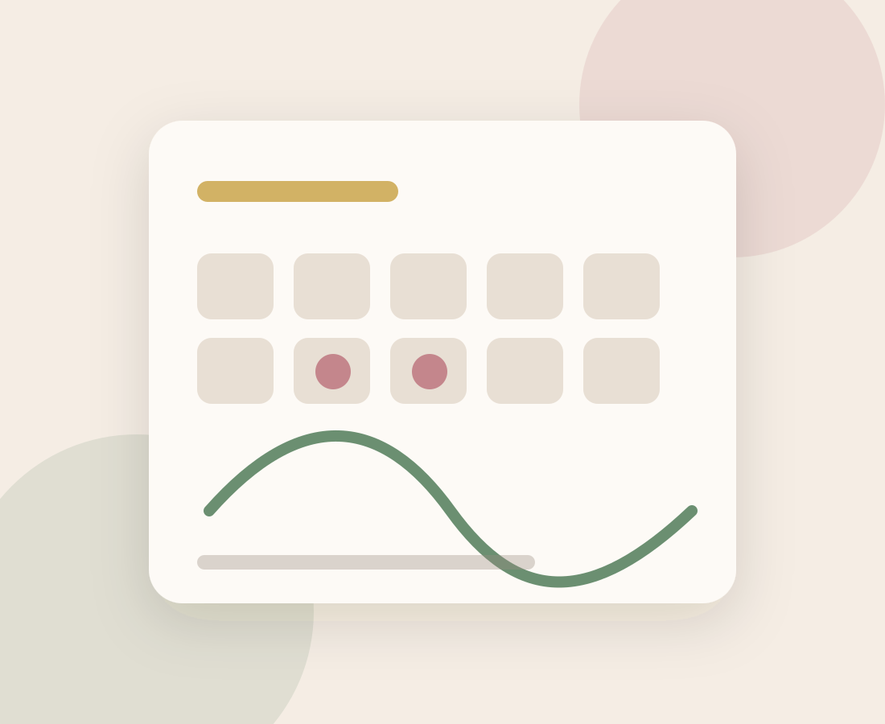

Un magazine conçu par et pour toutes les femmes
Health Corner est né d'un constat simple : trop peu de sources fiables, accessibles et bien écrites existent en français sur la santé féminine — du SOPK à la ménopause, en passant par la fertilité et le bien-être hormonal. Nous avons décidé de changer ça.
1 / 10
femmes dans le monde est touchée par le SOPK — 1ère cause d'infertilité ovulatoire
13
guides santé féminine sourcés : SOPK, fertilité, ménopause, bien-être hormonal
100 %
de nos affirmations médicales sont sourcées avec des références académiques citées
6
univers éditoriaux : SOPK, fertilité & grossesse, ménopause, bien-être hormonal
Transformer l'information médicale en levier de vie quotidienne
Le SOPK est diagnostiqué en moyenne 2,3 ans après les premiers symptômes, souvent après des années de cycles douloureux, d'acné persistante ou de difficultés à concevoir. Dans cet intervalle, les femmes cherchent des réponses — souvent dans des forums peu fiables ou des contenus trop techniques.
Notre mission est de combler ce vide : offrir des contenus rigoureusement sourcés, écrits avec soin, accessibles à toutes — sans jargon inutile, sans sensationnalisme, sans promesses non fondées. Chaque article de Health Corner est fondé sur des études cliniques publiées et des recommandations d'organismes de référence, systématiquement citées, et actualisé quand la science avance.
Rigoureuse
Sources académiques citées, recommandations ESHRE 2023, données de méta-analyses récentes.
Accessible
Vulgarisation soignée, schémas explicatifs, résumés « en bref » pour les lectrices pressées.
Indépendante
Aucun lien financier avec des laboratoires. Nos recommandations ne sont pas rémunérées.
Bienveillante
Nous abordons le SOPK sans jugement — sans culpabilisation sur le poids, l'alimentation ou les choix médicaux.
« Le SOPK n'est pas une condamnation. C'est une condition chronique que l'on peut apprendre à comprendre, à équilibrer, et avec laquelle on peut vivre pleinement. »— L'équipe éditoriale, Health Corner

Comment nous créons nos contenus
Chaque article de Health Corner passe par un processus éditorial strict pour garantir exactitude, clarté et utilité.
Étape 1
Recherche scientifique
Nos rédactrices médicales analysent les études publiées dans PubMed, Cochrane et les journaux de référence (NEJM, BJOG, Fertil Steril). Minimum 5 sources primaires par article.
Étape 2
Rédaction vulgarisée
Le contenu est rédigé pour être compris par toute femme, sans background médical requis. Résumés, schémas, tableaux et listes structurent l'information complexe.
Étape 3
Vérification des sources
Chaque affirmation médicale est confrontée aux recommandations d'organismes de référence (HAS, Ameli, ESHRE, CNGOF) et aux méta-analyses les plus récentes avant publication.
Étape 4
Mise à jour continue
La science évolue. Nos articles sont révisés lorsque de nouvelles recommandations paraissent (ex. guidelines ESHRE). La date de mise à jour est toujours indiquée.
Avertissement légal et médical
Les contenus de Health Corner sont à visée informative et éducative uniquement. Ils ne constituent pas un avis médical, ne remplacent pas une consultation avec un professionnel de santé, et ne doivent pas être utilisés pour l'auto-diagnostic ou l'auto-traitement. En cas de doutes sur votre santé, consultez toujours votre médecin ou gynécologue.
Nos engagements envers vous
Preuves avant opinions
Nous citons uniquement des études publiées dans des journaux à comité de relecture. Nos articles distinguent clairement ce qui est démontré, ce qui est probable, et ce qui est encore incertain.
Zéro miracle, zéro culpabilité
Nous ne promettons pas de « guérison SOPK » et ne culpabilisons jamais nos lectrices. Le SOPK est complexe et personnel — nos contenus respectent cette réalité.
Indépendance éditoriale
Nos recommandations ne sont pas influencées par des partenariats commerciaux. Si nous mentionnons un produit ou complément, c'est parce que les données cliniques le soutiennent.
Inclusive et diverse
Le SOPK touche les femmes de tous poids, toutes origines, toutes orientations. Nos contenus s'adressent à toutes, sans présupposés sur le corps ou le mode de vie.
Toujours à jour
La science SOPK progresse vite — de nouveaux RCT et méta-analyses paraissent chaque année. Nous révisons nos articles dès que de nouvelles données significatives sont publiées.
À l'écoute
Nos lectrices nous écrivent pour signaler des inexactitudes, suggérer des sujets ou partager leur expérience. Chaque retour est lu par notre équipe et peut conduire à une correction ou un nouvel article.
Tout savoir sur Health Corner
Vos articles remplacent-ils une consultation médicale ?
Qui rédige les articles Health Corner ?
Êtes-vous financés par des laboratoires ou des marques de compléments ?
Je pense avoir un SOPK, par où commencer ?
Comment signaler une erreur ou suggérer un sujet ?
Puis-je reproduire ou partager vos contenus ?
Contactez l'équipe
Une question, une erreur à signaler, un sujet à suggérer ou une proposition de collaboration ? Notre équipe répond sous 48h ouvrées.
Découvrez nos guides complets
Tous nos articles sont librement accessibles, sans inscription requise.